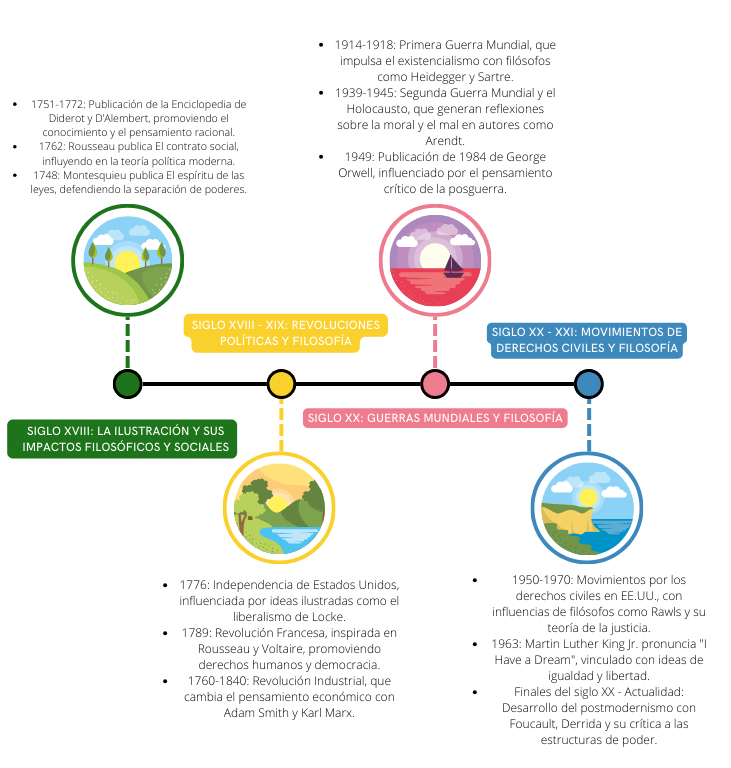
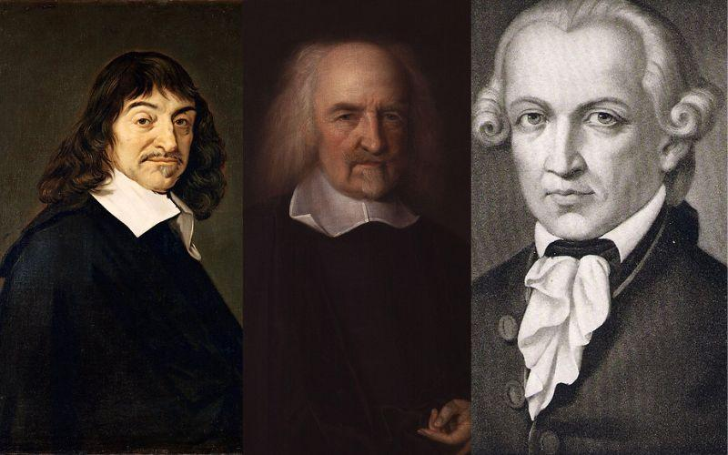
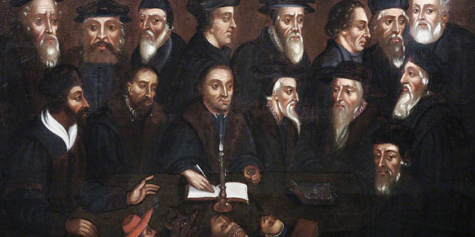

Humanismo es un concepto polisémico que se aplica tanto al estudio de las letras
humanas, los estudios clásicos y la filología grecorromana.
Ruptura con la escolástica
Ruptura con la escolástica” es un ensayo de Jaime Labastida, filósofo y poeta
mexicano, que analiza el trabajo de Agustín Rivera y Sanromán
Metodo Cientifico
El método científico se utilizó por primera vez durante la llamada «Revolución
Científica»
Humanismo
Humanismo es un concepto polisémico que se aplica tanto al estudio de las letras humanas, los estudios
clásicos y la filología grecorromana.
Por otro lado, también se denomina humanismo al «sistema de creencias centrado en el principio de que las
necesidades de la sensibilidad y de la inteligencia humana pueden satisfacerse sin tener que aceptar la
existencia de Dios y la predicación de las religiones
El Humano feliz (Happy Human) es un icono que se ha adoptado como símbolo
internacional del humanismo secular.
El humanismo es, en resumen, un componente de una gran variedad de sistemas filosóficos más específicos y de
varias escuelas de pensamiento religioso.
Mucho antes de ser ampliamente empleado en términos políticos, el
humanismo es un concepto propio de la historia de la filosofía, renovada con el Renacimiento, asociado en
particular con el movimiento representado por Erasmo, Michel de Montaigne o incluso por Guillaume Budé, a
quienes corresponde el honor de haberse interesado a la vez por la literatura de la antigüedad grecolatina y
la reflexión personal.
Ruptura con la escolástica
Ruptura con la escolástica” es un ensayo de Jaime Labastida, filósofo y poeta mexicano, que analiza el
trabajo de Agustín Rivera y Sanromán
En este ensayo, Labastida destaca que los juicios críticos de Rivera y Sanromán se basan en documentos
históricos.
Jaime Labastida.
Subraya que los autores que pusieron en relieve el atraso de la Nueva España en asuntos de ciencia y
filosofía seguían el método escolástico tradicional.
Señala que estos autores empleaban el silogismo como procedimiento de demostración, ignoraban el método
experimental en física y medicina.
Historia (Linea del tiempo)

Linea del tiempo
Crítica de la razón pura de Kant
La Crítica de la razón pura (en alemán: Kritik der reinen Vernunft) es la obra principal del filósofo prusiano
Immanuel Kant.
Se trata de una indagación trascendental acerca de las condiciones epistémicas del conocer humano (la
situación y
capacidad de los humanos para conocer asuntos de diverso tipo), cuyo objetivo central es lograr una respuesta
definitiva
sobre si la metafísica puede ser considerada una ciencia.
Portada de la primera edición (1781).
En esta obra, Kant intenta la conjunción de racionalismo y empirismo, haciendo una crítica de las dos
corrientes
filosóficas que se centraban en el objeto como fuente de conocimiento, y así, dando un «giro copernicano» al
modo de
concebir la filosofía, estudiando el sujeto como la fuente que construye el conocimiento del objeto, a través
de la
representación que el sujeto, mediante la sensibilidad inherente a su naturaleza, toma del objeto.
Entre las resistencias que encontró la obra se puede citar que Pío VIII, antes de llegar a papa católico, como
prefecto
de la Congregación del Índice prohibió bajo amenaza de excomunión la lectura de la Crítica de la razón pura
(decreto del
8 de julio de 1827).
Metodo Cientifico
El método científico se utilizó por primera vez durante la llamada «Revolución Científica»
El método combinaba conocimientos teóricos como las matemáticas con la experimentación práctica mediante
instrumentos científicos, análisis y comparaciones de resultados
Experimento de la bomba de aire de Hooke y Boyle
El objetivo de este método científico era no solo aumentar el conocimiento humano, sino hacerlo de forma que
beneficiara prácticamente a todos y mejorara la condición humana.
Los pensadores siempre habían realizado experimentos, desde figuras antiguas como Arquímedes (287-212 a.C.)
hasta los alquimistas de la Edad Media, pero sus experimentos solían ser fortuitos y muy a menudo los
pensadores intentaban demostrar una idea preconcebida.

Filosofia Moderna
La filosofía moderna es un movimiento intelectual que surgió en los siglos XVII y XVIII, después del
Renacimiento.
Se caracteriza por un cambio en la forma de pensar y concebir el mundo.
Filosofia Moderna
Algunos de los principales aportes de la filosofía moderna incluyen: Énfasis en la razón y la ciencia
Los filósofos modernos, como René Descartes y Francis Bacon, promovieron la primacía de la razón y la
observación empírica como bases para el conocimiento.

Filosofia Moderna
La filosofía moderna puede pensarse en relación a dos grandes corrientes:
El empirismo y el racionalismo. Algunos de los filósofos más importantes del empirismo fueron John Locke
(1632-1704), George Berkeley (1685-1753) y, David Hume (1711-1776).